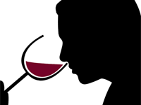

Fase Visual

Se evalúan los colores (intensidad y matiz) y la transparencia. Se analizan matices, lágrimas, limpidez, fluidez, efervescencia. Se atiende especialmente a la apariencia del vino.
Fase Olfativa
Se inhala profundamente, primero sin mover la copa, luego, girándola para que se volatilicen los aromas más complejos. Se analizan persistencia, intensidad y calidad de los aromas. Se identifican los descriptores. Se evalúa si posee tipicidad y complejidad varietal. Se aprecian aromas.Nariz / tacto: Percibimos la causticidad (provocada por el alcohol, sensación quemante o ardor en las paredes de la nariz) y la temperatura.
Fase Gustativa

Se toma un sorbo y mientras el vino permanece en la boca, se absorbe aire y se lo hace burbujear. Se evalúa el ataque (gustos dulces), la acidez, el equilibrio, la intensidad de boca y la concentración de aromas y sabores. Se detectan los descriptores y se analiza la textura (untuosidad, astringencia, causticidad) del vino. Se percibe la persistencia y se determina la tipicidad y complejidad.